四類生物分子
投影片 02
| 類別 | 組成或構造 | 代表用途 |
|---|---|---|
| 醣類 | 單醣、雙醣與多醣 | 供能、儲能、構成植物細胞壁 |
| 蛋白質 | 胺基酸以肽鍵相連 | 催化、運輸與組織構造 |
| 油脂 | 甘油與脂肪酸形成的三酸甘油酯 | 長期儲能 |
| 核酸 | 核苷酸連成長鏈 | 儲存與表達遺傳資訊 |
延伸閱讀：單體相連與聚合物水解是方向相反的過程。水解時，水參與共價鍵的斷裂。
共 171 張投影片
| 類別 | 組成或構造 | 代表用途 |
|---|---|---|
| 醣類 | 單醣、雙醣與多醣 | 供能、儲能、構成植物細胞壁 |
| 蛋白質 | 胺基酸以肽鍵相連 | 催化、運輸與組織構造 |
| 油脂 | 甘油與脂肪酸形成的三酸甘油酯 | 長期儲能 |
| 核酸 | 核苷酸連成長鏈 | 儲存與表達遺傳資訊 |
延伸閱讀：單體相連與聚合物水解是方向相反的過程。水解時，水參與共價鍵的斷裂。
| 類別 | 例子 | 組成或完全水解產物 |
|---|---|---|
| 單醣 | 葡萄糖、果糖、半乳糖 | 三者均為六碳醣，互為同分異構物 |
| 雙醣 | 蔗糖 | 葡萄糖＋果糖 |
| 雙醣 | 麥芽糖 | 葡萄糖＋葡萄糖 |
| 雙醣 | 乳糖 | 葡萄糖＋半乳糖 |
| 多醣 | 澱粉、纖維素、肝醣 | 均由葡萄糖構成，連接方式不同 |
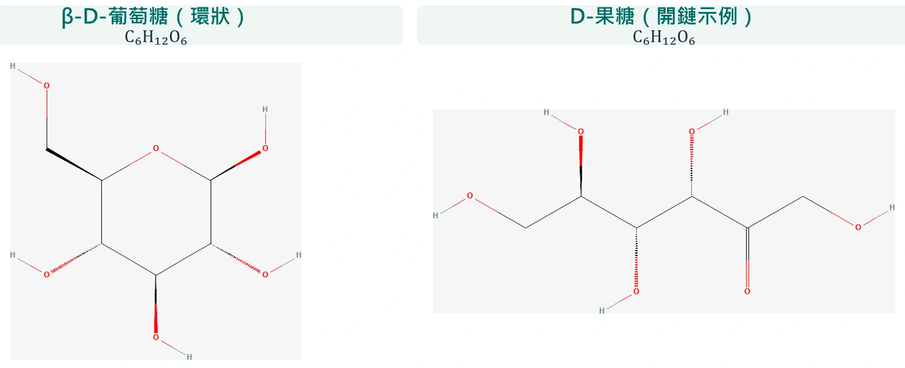
葡萄糖和果糖的分子式相同，原子連接方式不同。
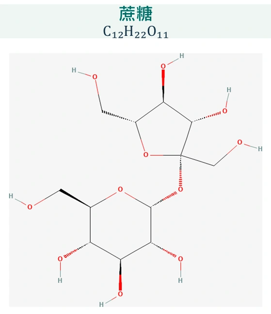
蔗糖由葡萄糖與果糖經糖苷鍵相連。
| 多醣 | 常見位置 | 主要功能或性質 |
|---|---|---|
| 澱粉 | 米飯、馬鈴薯等植物組織 | 植物儲能，人體可消化 |
| 纖維素 | 植物細胞壁 | 提供支撐，人體缺少分解纖維素的酵素 |
| 肝醣 | 動物肝臟與骨骼肌 | 儲存葡萄糖，具有較多分支 |
碘液與澱粉中的直鏈澱粉結合可呈藍黑色。
α-胺基酸的中央碳連接胺基、羧基、氫及側鏈 R。側鏈的差異影響胺基酸性質。
蛋白質受熱或遇酸鹼可能變性，改變摺疊與功能。煮熟的蛋白凝固是常見例子。
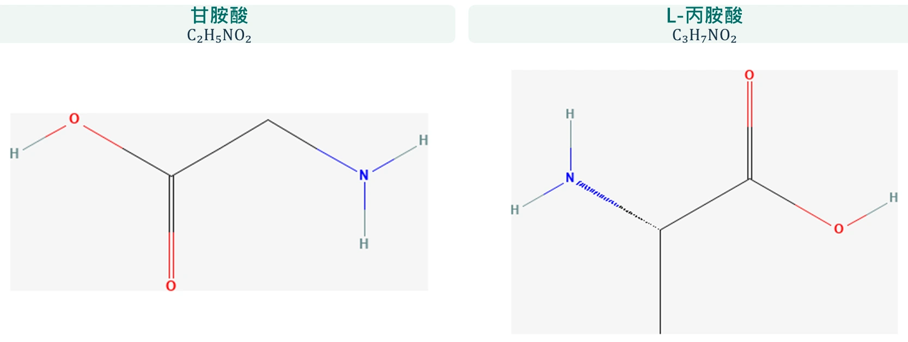
兩者都有胺基與羧基。甘胺酸的側鏈是 H，丙胺酸的側鏈是 CH₃。
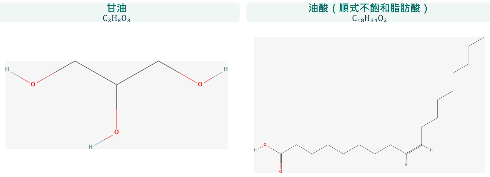
甘油有三個羥基。油酸有一個羧基，以及使長碳鏈彎折的一個順式碳碳雙鍵。
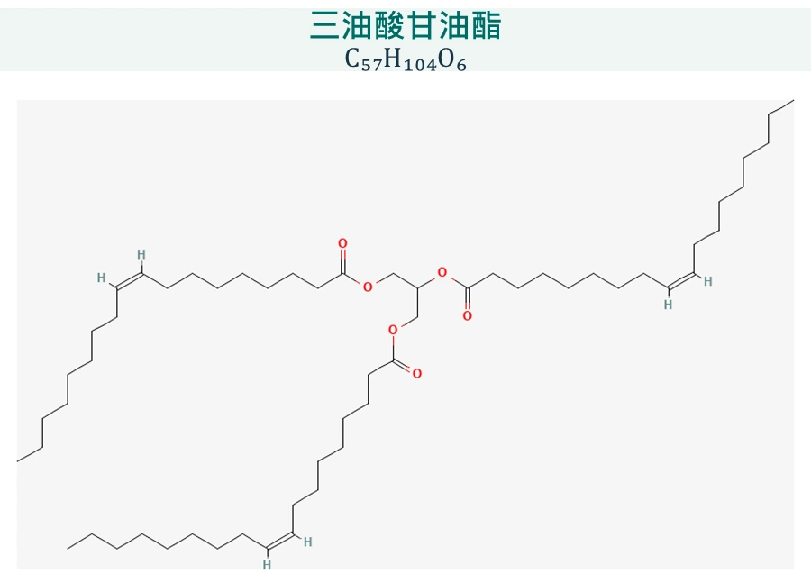
中央的甘油骨架透過三個酯鍵，連接三條來自油酸的長碳鏈。
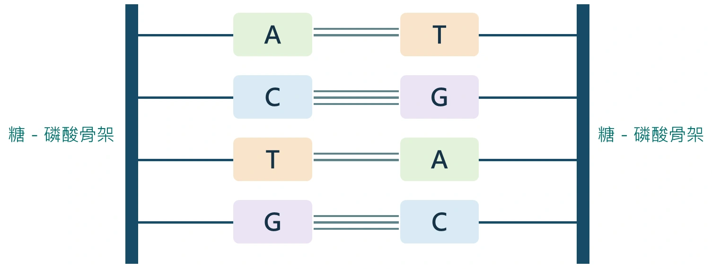
每股的糖與磷酸交替構成骨架，鹼基向內配對。A–T 有兩條氫鍵，C–G 有三條氫鍵。
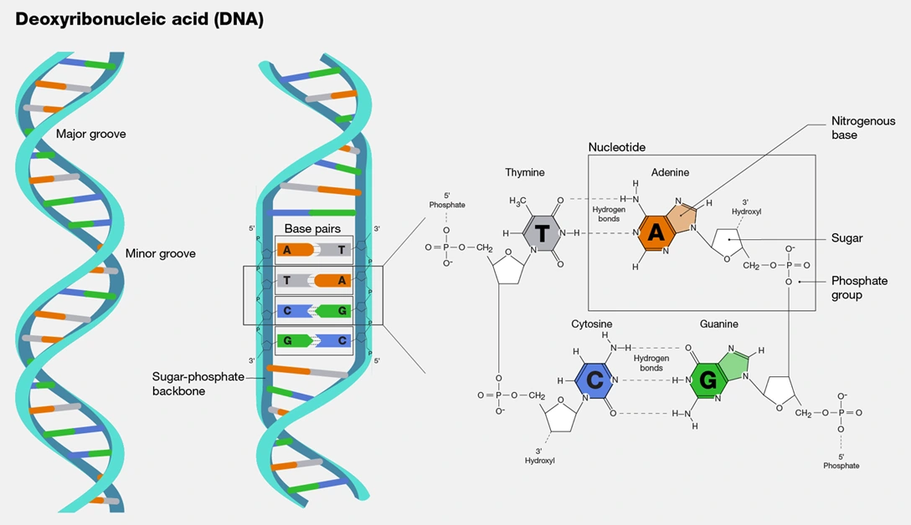
DNA 的兩股方向相反。糖–磷酸骨架在外側，A–T 和 C–G 的鹼基對在內側。
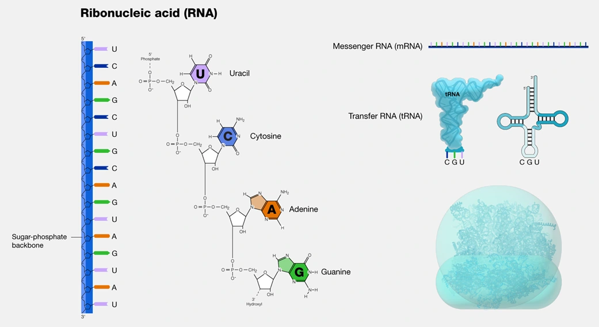
RNA 通常是單股，含 A、U、C、G。同一條 RNA 可在互補區段配對並摺疊。
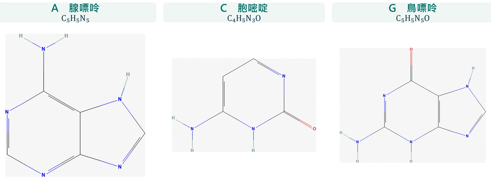
A、G 有雙環骨架，屬嘌呤。C 為單環，屬嘧啶。
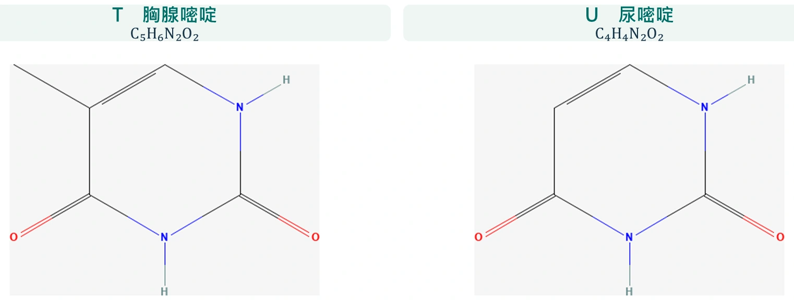
T 相當於在 U 的 5 號碳位置接上甲基。DNA 的四種鹼基為 A、T、C、G，RNA 為 A、U、C、G。
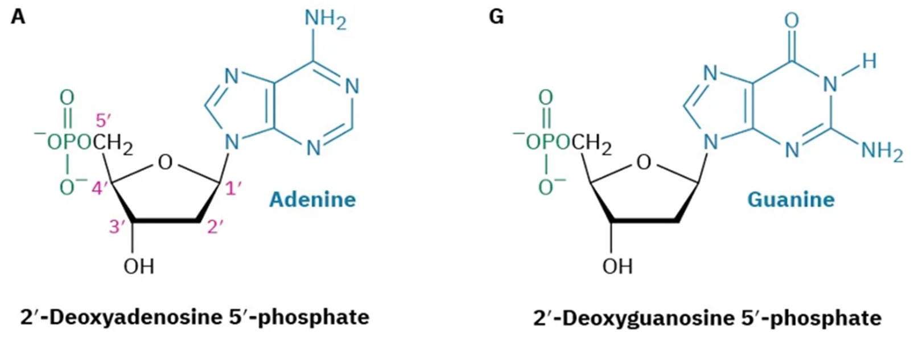
每種結構都包含磷酸、去氧核糖與一種含氮鹼基。A 和 G 都有雙環。
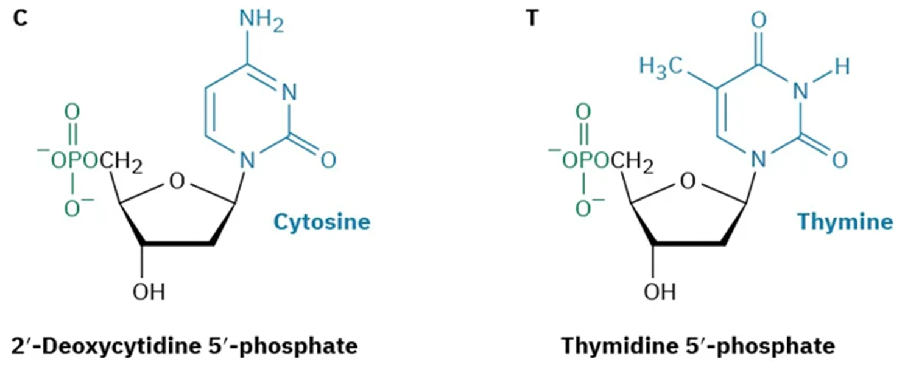
C 和 T 都有單環。DNA 四種鹼基為 A、T、C、G。
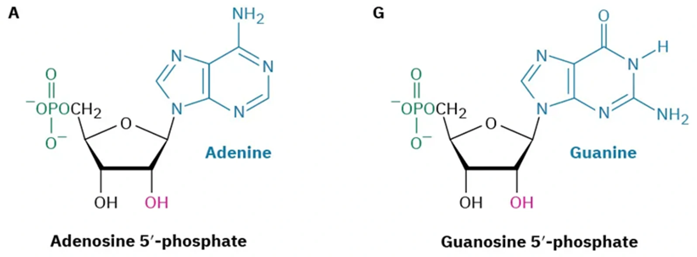
核糖的 2′ 碳有羥基。去氧核糖的 2′ 碳在對應位置為氫。
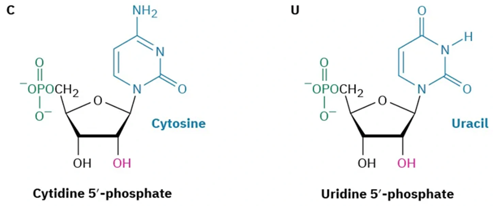
C 和 U 都有單環。RNA 四種鹼基為 A、U、C、G。
有關醣類化合物的敘述，哪些正確？
講義第 191 頁
有關蛋白質的敘述，哪些正確？
講義第 193 頁
有關蛋白質與油脂的組成，哪些正確？
講義第 195 頁
有關油脂，何者錯誤？
講義第 195 頁
有關核酸的敘述，何者錯誤？
講義第 197 頁
下列高分子與組成物質的配對，哪些正確？
講義第 197 頁
有關葡萄糖，何者正確？
講義第 198 頁
何者是葡萄糖的同分異構物？
講義第 198 頁
有關純蔗糖，何者不正確？
講義第 198 頁
若某單醣分子式如下，三分子縮合所得三醣的分子式為何？
講義第 198 頁
3.42 g 蔗糖與 3.24 g 澱粉完全水解後，葡萄糖 x 與果糖 y 各有幾克？
講義第 198 頁
下列有關食品與營養的敘述，何者正確？
講義第 198 頁
哪一組水解產物有誤？
講義第 198 頁
何者不能再水解成更小的組成單元？
講義第 198 頁
何者為 DNA 與 RNA 共同的組成物質？
講義第 199 頁
下列何者在教材分類中通常分子量最低？
講義第 199 頁
有關醣類，哪些正確？
講義第 199 頁
有關醣類，哪些正確？
講義第 199 頁
下列關於醣類的敘述，哪些正確？
講義第 199 頁
哪些是核苷酸的基本組成？
講義第 199 頁
關於去氧核糖核酸，哪些正確？
講義第 199 頁
哪些有機化合物不含氮原子？
講義第 199 頁
| 類別 | 教材例子 | 化學或生物作用 |
|---|---|---|
| 制酸劑 | 碳酸氫鈉、氫氧化鎂 | 與胃酸反應 |
| 解熱鎮痛劑 | 阿司匹靈、對乙醯胺基苯酚 | 減輕發熱或疼痛 |
| 抗生素 | 盤尼西林 | 抑制敏感細菌的細胞壁合成 |
碳酸氫鈉反應較快，較難溶於水的氫氧化鎂等反應通常較和緩。
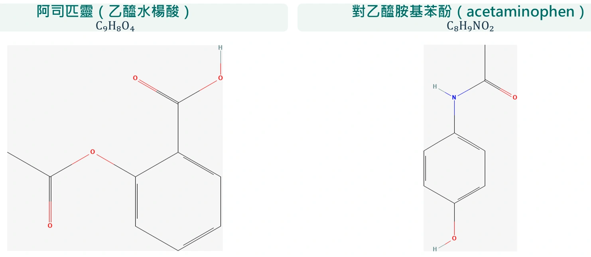
兩者都有苯環。阿司匹靈含羧酸與酯基，對乙醯胺基苯酚含酚羥基與醯胺。
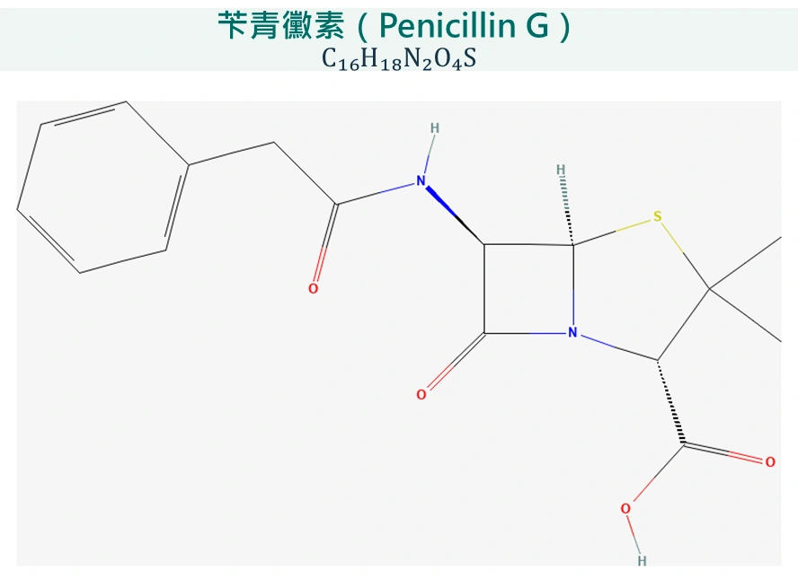
青黴素也稱盤尼西林。以青黴素 G 為例，可在中央辨認 β-內醯胺四元環和含硫五元環。
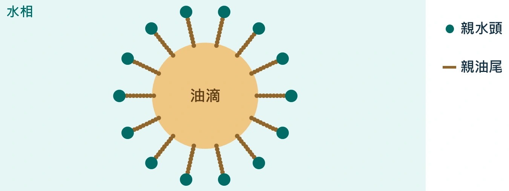
分散後的油滴被界面活性劑包覆，親油尾朝向油滴，親水頭朝向外面的水。
長碳鏈通常是親油端，帶電基團通常是親水端。
直鏈烷基清潔劑一般比高度分支的同類清潔劑容易被微生物分解。
磷酸鹽隨排水進入河湖可能增加藻類養分，造成優養化。
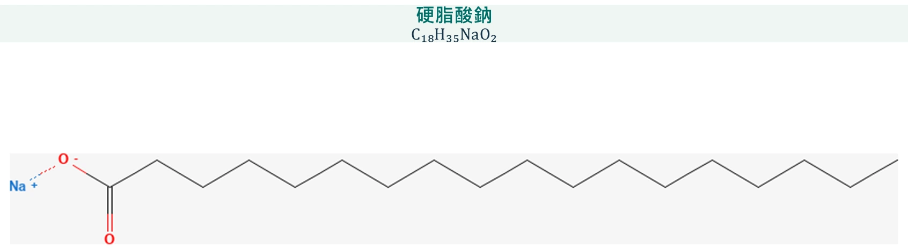
長碳鏈是親油尾，帶負電的羧酸根是親水頭，Na⁺ 是對離子。
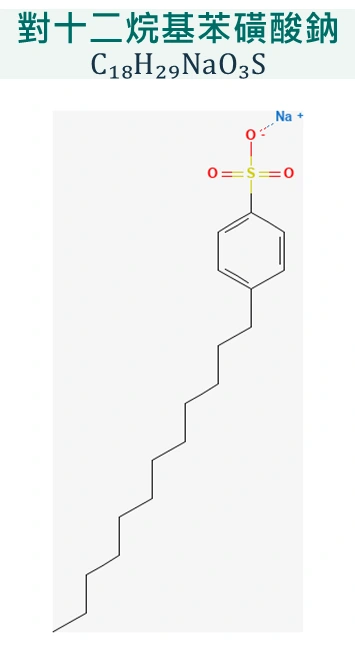
十二烷基與苯環構成疏水部分，磺酸根是帶負電的親水端。
在硬水中，合成清潔劑比肥皂更有洗滌能力，主因為何？
講義第 202 頁
何者為天然食用油製成的界面活性劑？
講義第 203 頁
某市售成藥標示每克含碳酸氫鈉 740 mg、碳酸鎂 80 mg。此藥物屬於哪一類？
講義第 203 頁
何者為速效性制酸劑？
講義第 203 頁
阿司匹靈分子含羧基，能與碳酸氫鈉反應。阿司匹靈屬於哪一類？
講義第 203 頁
抗生素中的盤尼西林，其作用為何？
講義第 203 頁
阿司匹靈不能作為哪一種藥劑？
講義第 203 頁
以脂肪為原料製備肥皂，需用何種試劑？
講義第 203 頁
合成清潔劑中，哪種添加物可能造成水質優養化？
講義第 203 頁
加入食鹽水溶液可分離長鏈脂肪酸鈉與甘油的混合物。這是利用哪一種性質的差異？
講義第 203 頁
肥皂可被微生物分解，主要原因為何？
講義第 204 頁
甲為丙酸根，乙為長鏈脂肪酸根，丙為鈉離子，丁為氯離子，戊為鈣離子。哪兩項組合適合當清潔劑？
講義第 204 頁
以肥皂清洗衣物後，將兩電極置入溶液並通直流電。被肥皂包圍的油滴朝哪一極移動？
講義第 204 頁
何者可用作洗去衣服油汙的清潔劑？
講義第 204 頁
關於常用藥物，哪些正確？
講義第 204 頁
有關藥物，哪些敘述符合教材所述？
講義第 204 頁
關於清潔劑，哪些正確？
講義第 204 頁
關於肥皂與清潔劑，哪些正確？
講義第 205 頁
甲為支鏈烷基苯磺酸鈉，乙為直鏈脂肪酸鈉。兩種分子的長碳鏈皆畫在左端。哪些敘述正確？
講義第 205 頁
| 能源 | 能量如何轉換 | 評估時要考慮 |
|---|---|---|
| 太陽光電 | 光能轉成電能 | 日照、時段、發電場址 |
| 風力發電 | 風的動能帶動葉片及發電機 | 風況、選址及生態影響 |
| 生質能 | 有機資源經燃燒或轉化釋出能量 | 土地、運輸、製程與生命週期排放 |
生質能可來自農林剩餘物、能源作物或有機廢棄物。整體效益需要比較投入與產出。
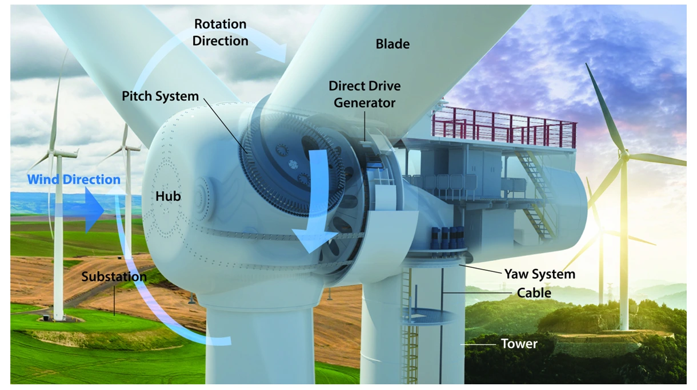
葉片帶動轉子。圖中的齒輪箱傳遞轉動，再由發電機將機械能轉為電能。
| 比較 | 乙烯水合 | 葡萄糖發酵 |
|---|---|---|
| 目標產物 | 乙醇 | 乙醇 |
| 方程式所示副產物 | 無 | 二氧化碳 |
| 理論原子經濟 | 100% | 約 51% |
製程評估也要考慮原料來源、用能、用水與排放。
乙烯水合製乙醇的原子經濟為 100%。葡萄糖發酵製乙醇的原子經濟是多少？
講義第 208 頁
舊法製造壓克力單體，每生成 1 mol 甲基丙烯酸甲酯（100 g），同時生成 1 mol 硫酸氫銨（115 g）。舊法的原子經濟是多少？
講義第 209 頁
哪一項不屬生質能利用？
講義第 209 頁
生質燃料要評估原料培養、製備、分離與儲存的投入。哪些是生質能源材料應具備的條件？
甲 能源零消耗 乙 能永續經營 丙 整體能源成本低
丁 零汙染 戊 使用基因改造生物
講義第 209 頁
哪些能源敘述符合教材？
甲 太陽能有開發潛力。乙 地熱開發可能帶來含硫氣體排放問題。
丙 水庫工程可能改變生態。丁 核能發電是利用鈾-238 核融合。
戊 核反應只需遵守通常的質量守恆。
講義第 210 頁
哪個做法最符合綠色化學從源頭減少汙染的理念？
講義第 210 頁
哪個反應對所列目標產物的原子經濟最高？
講義第 210 頁
有關各種能源的利用，哪些正確？
講義第 210 頁
按題目比較，下列哪些做法符合綠色化學？
講義第 210 頁
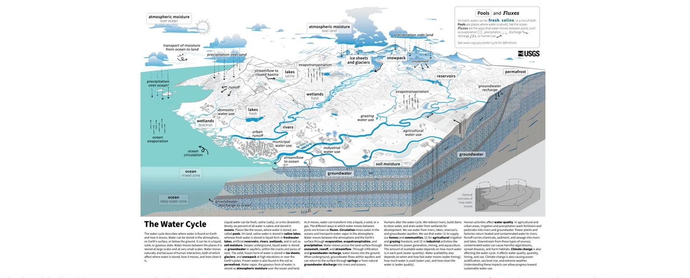
圖中的藍色箭頭表示水的移動。比較降水後流入河川的逕流，以及向下進入土壤和岩層的入滲。
| 比較 | 暫時硬水 | 永久硬水 |
|---|---|---|
| 共同特徵 | 含較多鈣、鎂離子 | 含較多鈣、鎂離子 |
| 典型伴隨陰離子 | 碳酸氫根 | 硫酸根、氯離子等 |
| 可用方法 | 煮沸或陽離子交換 | 陽離子交換等 |
逆滲透利用半透膜與外加壓力，讓一部分水與溶解鹽分分離。
| 問題 | 主要機制 | 例子 |
|---|---|---|
| 溫室效應增強 | 溫室氣體吸收地表放出的紅外線 | 二氧化碳、甲烷 |
| 平流層臭氧耗損 | 含氯或溴物質衍生的自由基催化分解臭氧 | 氟氯碳化物 |
| 酸沉降 | 二氧化硫與氮氧化物在大氣中反應，生成酸性物質 | 硫酸、硝酸 |
地表臭氧則是空氣污染物，可由氮氧化物和揮發性有機物在日照下形成。
| 項目 | 教學重點 |
|---|---|
| 汽車三元觸媒 | 促進一氧化碳及未燃燒烴氧化，也促進氮氧化物還原 |
| 懸浮微粒 | PM₂.₅ 指空氣動力學粒徑不大於 2.5 μm 的粒狀物 |
| 空氣品質指標 | 依各污染物副指標的最大值表示當時的空氣品質 |
有關水質淨化，何者錯誤？
講義第 213 頁
河水受到有機物嚴重汙染。處理後通入哪種氣體，可提高溶氧並有利生態恢復？
講義第 213 頁
關於硬水，哪些正確？
講義第 215 頁
下列空氣汙染的敘述哪些正確？
講義第 222 頁
關於空污及其防治，哪些正確？
講義第 222 頁
關於硬水，何者正確？
講義第 223 頁
有關水淨化，何者正確？
講義第 223 頁
哪一種海水淡化方法在原理上完全不可行？
講義第 223 頁
哪種方法無法去除暫時硬水的鈣、鎂離子？
講義第 223 頁
水患後水源混濁，有關都市淨水處理的步驟，何者正確？
講義第 223 頁
合成清潔劑在硬水中通常比肥皂更具洗滌能力，主因為何？
講義第 223 頁
臺灣有些地區雨水 pH 偏低。關於酸雨，何者正確？
講義第 224 頁
汽機車觸媒轉化器具有下列何種作用？
講義第 224 頁
下列何者不是氟氯碳化物？
講義第 224 頁
關於臭氧，何者正確？
講義第 224 頁
下列何者能解釋溫室效應造成的地表增溫？
講義第 224 頁
關於硬水，哪些正確？
講義第 224 頁
汽車觸媒轉化器可減少哪些汙染物的排放？
講義第 225 頁
下列哪些大氣成分吸收地表紅外線，具有明顯的溫室效應？
講義第 225 頁
有關空氣汙染，哪些符合題意？
講義第 225 頁
下列有關氮氧化物的敘述，哪些正確？
講義第 225 頁
寫出並平衡反應式。
（1）鈣離子與硬脂酸鈉作用。
（2）暫時硬水煮沸軟化。
（3）二氧化碳通入石灰水產生混濁，再通過量二氧化碳變澄清。
（4）大理石與鹽酸作用。
講義第 225 頁
| 概念 | 例子或用途 |
|---|---|
| 光觸媒 | 二氧化鈦吸收適當波長後產生電子與電洞，可促進表面氧化還原 |
| 超親水表面 | 水容易鋪展成薄膜，可用於防霧或輔助沖走汙物 |
| 蓮葉效應 | 表面微奈米結構有助水珠滾落，帶走部分灰塵 |
光觸媒效果會受光源、表面狀態與污染物種類影響。
| 材料 | 碳原子排列 | 比較重點 |
|---|---|---|
| 石墨 | 多層六角網格堆疊 | 層與層之間相對容易滑動 |
| 石墨烯 | 單層六角碳網 | 薄且可導電、導熱 |
| 碳奈米管 | 可視為六角碳網捲成的中空管 | 捲曲方式影響電子性質 |
| 鑽石 | 三維共價網狀排列 | 硬度高，常見純鑽石不導電 |
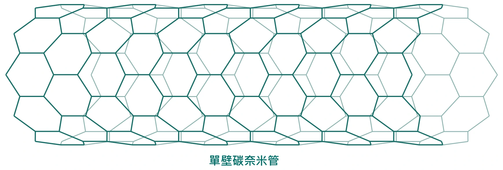
石墨烯與碳奈米管都含六角碳環。兩者的幾何形態分別為平面與中空管。
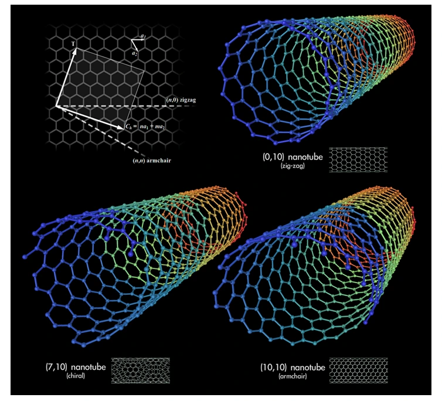
圖中的扶手椅型、鋸齒型與手性型，反映碳六角網格沿不同方向捲合。
關於奈米材料，哪些正確？
講義第 228 頁
關於奈米碳管，哪些正確？
講義第 229 頁
奈米碳管是碳的同素異形體，管壁主要是幾邊形的碳環？
講義第 229 頁
關於奈米及相關材料，何者正確？
講義第 229 頁
何者並非奈米碳管的一般特性？
講義第 229 頁
1 mm 是 1 nm 的幾倍？
講義第 229 頁
關於銅奈米粒子，何者正確？
講義第 229 頁
關於奈米碳管，何者錯誤？
講義第 230 頁
黃金奈米粒子的半徑為 1.44 nm，金原子半徑約為 0.144 nm。依體積比粗估此粒子含有多少個金原子？
講義第 230 頁
關於奈米碳管，何者錯誤？
講義第 230 頁
講義第 230 頁
銀奈米粒子的質量如下，估計含有多少個銀原子？銀原子半徑約 0.1 nm，銀密度為 10.5 g/cm³，將原子視為小球。
講義第 230 頁
假想太空電梯纜繩由十億條奈米碳管組成，每條奈米碳管含下列數量的碳原子。估算需要多少公斤的碳？
講義第 230 頁
關於奈米材料，哪些正確？
講義第 231 頁
以等量材料比較，哪些敘述符合奈米材料常見特徵？
講義第 231 頁
下列與奈米科技有關的敘述，哪些正確？
講義第 231 頁
甲、乙、丙、丁各代表下式所列氧化物。選出可用於（1）光觸媒、（2）精密陶瓷、（3）光學纖維、（4）乾電池的材料。
講義第 231 頁
| 加入物 | 沙拉油 | 酒精 | 甘油 | 甲苯 |
|---|---|---|---|---|
| 與水振盪後 | 分層 | 混合 | 混合 | 分層 |
| 加清潔劑再振盪 | 可乳化 | 仍可混合 | 仍可混合 | 可形成分散液 |
清潔劑用量、搖晃方式、靜置時間會影響分層狀態。乳化液通常由許多小液滴分散而成。
（1）哪些物質和水混合後會形成兩層？
（2）清潔劑結構中，哪一端與油汙作用？
（3）酒精和甘油能混合嗎？利用分子結構說明。
講義第 232 頁
關於聚合物，哪些正確？（114 學測）
講義第 233 頁
太陽照射後，比較未照光、只照光、照光加碳化咖啡粉及照光加混有矽烷的碳化咖啡粉。海水上方設透明斜蓋，可收集冷凝水。碳化咖啡粉為何增加水的蒸發？（113 學測）
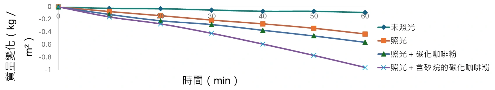
講義第 233 頁
延續前題。在水面灑上混有油脂特性矽烷的碳化咖啡粉，蒸發效果較好。哪些正確？（113 學測）
講義第 234 頁
講義第 234 頁
兩份等體積水樣的六價鉻初始濃度不同。加入等量金屬有機骨架（MOF）材料，30 分鐘後測得如圖。題目以 100 ppb 與 50 ppb 為比較門檻。哪些正確？（111 學測）
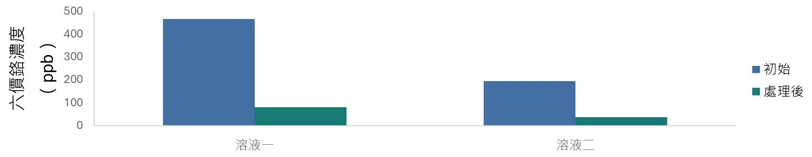
講義第 234 頁
將 MOF 與聚合物結合製成錠型材料，與純 MOF、純聚合物比較。下列哪些解讀正確？（111 學測）
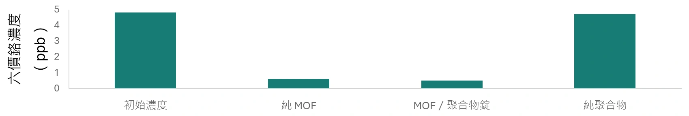
講義第 235 頁
酵素可催化生化反應。胃蛋白酶能把蛋白質分成較小片段。哪些正確？（111 學測）
講義第 235 頁
步驟 1：紅色油溶性染料溶於石油醚。步驟 2：將紅色溶液與等體積蒸餾水振盪，靜置。步驟 3：加肥皂水，再振盪、靜置。步驟 4：加飽和氯化鎂溶液，再振盪、靜置。哪些觀察正確？（108 學測）
講義第 235 頁
一般泡麵所列成分中，哪些主要是碳水化合物？（108 學測）
講義第 236 頁
依下表判斷與生物分子組成相關的敘述，何者正確？（107 學測）
| 元素 | H | C | N | O | Na | Mg | P | S | Cl | K | Ca |
|---|---|---|---|---|---|---|---|---|---|---|---|
| 原子序 | 1 | 6 | 7 | 8 | 11 | 12 | 15 | 16 | 17 | 19 | 20 |
講義第 236 頁
關於醣類、蛋白質與油脂，哪些正確？（107 學測）
講義第 236 頁
葡萄糖、半乳糖及核糖均含碳 40.0%、氫 6.7%，其餘為氧。葡萄糖及半乳糖的分子量為 180，核糖為 150。哪些正確？（106 學測）
講義第 236 頁
香蕉成分分析與部分鹽類在 30 ℃ 的溶解度如表。樣品去除有機物後，無機物以碳酸鹽及氧化物為主，熱水溶解後先去除不溶物，再以沉澱法分離鉀鹽。
| 每 100 g 香蕉 | 質量 | 每 100 g 香蕉 | 質量 |
|---|---|---|---|
| 醣類 | 28 g | 鈣 | 150 mg |
| 脂肪 | 0.5 g | 鎂 | 130 mg |
| 蛋白質 | 1.5 g | 磷 | 20 mg |
| 胺基酸 | 0.05 g | 鉀 | 390 mg |
| 維生素 | 0.1 g | 鈉 | 1 mg |
| 水分 | 69 g | 鋅 | 0.1 mg |
講義第 237 頁
依前頁題組資料，樣品以熱水處理後先用濾紙去除不溶物，再利用溶解度差異取得鉀鹽固體。用了哪些實驗方法？（115 學測）
講義第 237 頁
根據表中溶解度（g／100 g 水），判斷哪些敘述正確。題組以過氯酸銨分離，所得固體加熱後質量減少 46.2%。（115 學測）
| 陽離子 | 硫酸根 | 氯酸根 | 過氯酸根 | 硝酸根 | 碳酸根 |
|---|---|---|---|---|---|
| 鈉 | 110 | 105 | 209 | 104 | 110 |
| 鉀 | 130 | 10 | 1.3 | 160 | 120 |
| 鎂 | 24 | 150 | 100 | 140 | ＜0.01 |
| 鈣 | 0.3 | 130 | 190 | 150 | ＜0.01 |
講義第 237 頁
例題 1 B、D
例題 2 A、C、D、E
例題 3 A、D、E
練習 3 D
例題 4 B
練習 4 D、E
單選 1 A
單選 2 A
單選 3 A
單選 4 C
單選 5 E
單選 6 C
單選 7 A
單選 8 A
單選 9 B
單選 10 D
多選 1 A、C、D、E
多選 2 B、D
多選 3 A、B、D、E
多選 4 A、B、C
多選 5 C、E
多選 6 A、C
例題 1 D
練習 1 B
單選 1 D
單選 2 A
單選 3 D
單選 4 D
單選 5 D
單選 6 B
單選 7 D
單選 8 B
單選 9 A
單選 10 C
單選 11 A
單選 12 B
多選 1 B、C、D
多選 2 B、D、E
多選 3 A、C、D
多選 4 A、C
多選 5 B、C、E
例題 1 C
練習 1 C
單選 1 E
單選 2 A
單選 3 C
單選 4 D
單選 5 A
多選 1 B、E
多選 2 C、D、E
例題 1 B
練習 1 D
例題 2 A、E
例題 3 A、B、E
練習 3 A、B
單選 1 A
單選 2 C
單選 3 A
單選 4 A
單選 5 D
單選 6 D
單選 7 A
單選 8 E
單選 9 C
單選 10 A
單選 11 B
多選 1 A、B、C
多選 2 A、C、D
多選 3 A、E
多選 4 C、D、E
多選 5 B、E
例題 1 B、E
練習 1 B、C
單選 1 D
單選 2 C
單選 3 C
單選 4 C
單選 5 D
單選 6 D
單選 7 C
單選 8 A
單選 9 B
單選 10 D
單選 11 D
多選 1 B、C、D、E
多選 2 B、C、E
多選 3 A、B
非選 1 （1）丙 （2）丁 （3）甲 （4）乙
問題與討論 （1）沙拉油、甲苯。
（2）親油端。
（3）可以。兩者均有羥基，可與對方形成氫鍵。
歷屆 1 A、E
歷屆 2 D
歷屆 3 A、E
歷屆 4 A、D、E
歷屆 5 A、D、E
歷屆 6 A、B、E
歷屆 7 A、D
歷屆 8 A、D、E
歷屆 9 A、C
歷屆 10 B
歷屆 11 B、C、D
歷屆 12 A、D
綜合 1 C、D
綜合 2 A、B、C